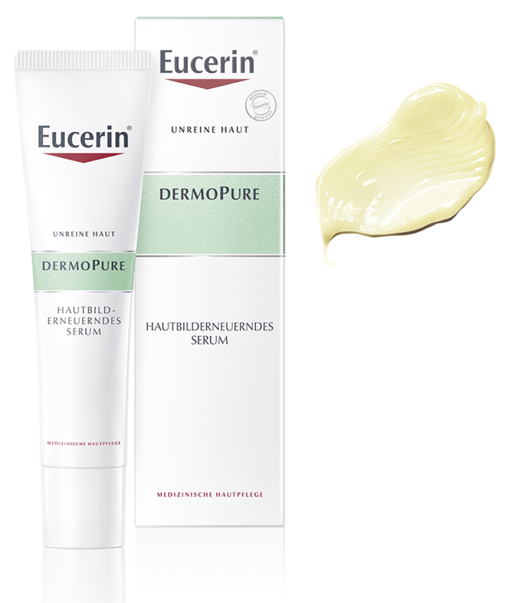

EUCERIN dermoPure
Сыворотка для проблемной кожи
Показания к применению:
жирная и комбинированная кожа, расширенные поры, акне и постакне.
Результат от применения: видимое улучшение состояния кожи уже через 1 неделю. Очищает и сужает поры, выравнивает поверхность кожи, уменьшает следы постакне.

Гидрокси комплекс
10% Гидрокси комплекс (гликолевая кислота, салициловая кислота, глюконолактон) – обновление кожи, удаление омертвевших клеток, очищение пор
Ликохалкон А
Противовоспалительное и антиоксидантное действие
Пантенол
Успокаивает, восстанавливает защитный барьер, усиливает регенерацию кожи
Способ применения:наносить на очищенную кожу лица, 1 раз в день вечером. Утром обязательно использовать средство с SPF.
* В заголовке слайда ссылка на более подробную информацию о продукте